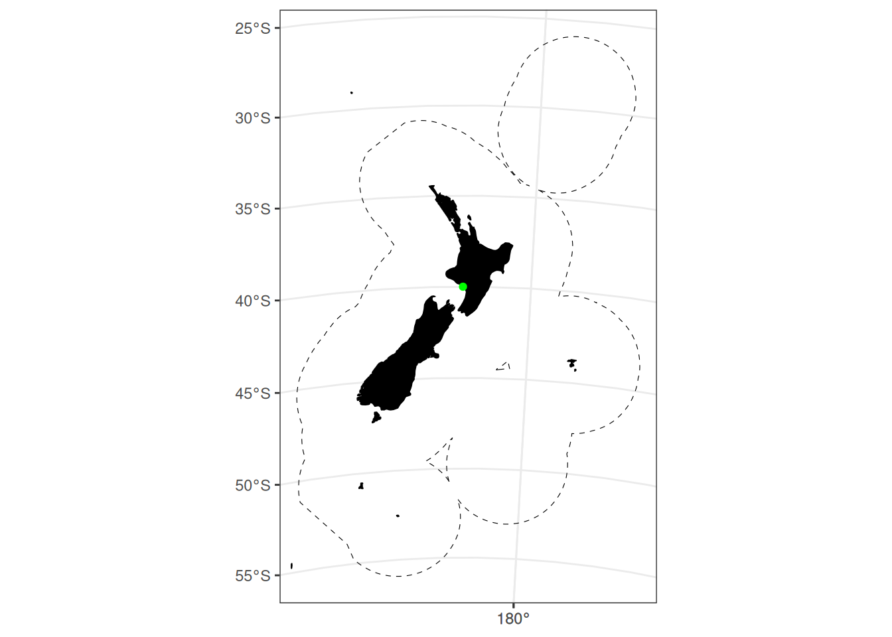

get_projection_center <- function(proj) {
crs_info <- st_crs(proj)
lat_0 <- as.numeric(gsub(".*lat_0=([-0-9.]+).*", "\\1", crs_info$input))
lon_0 <- as.numeric(gsub(".*lon_0=([-0-9.]+).*", "\\1", crs_info$input))
return(list(lon = lon_0, lat = lat_0))
}
x <- get_projection_center(proj_nzsf())
points_df <- data.frame(lon = x$lon, lat = x$lat) |>
st_as_sf(coords = c("lon", "lat"), crs = 4326) |>
st_transform(crs = proj_nzsf())
ggplot() +
plot_statistical_areas(area = "EEZ", colour = "black", fill = NA, linetype = "dashed") +
plot_coast(resolution = "medium", fill = "black", colour = "black") +
geom_sf(data = points_df, colour = "green") +
plot_clip("NZ")